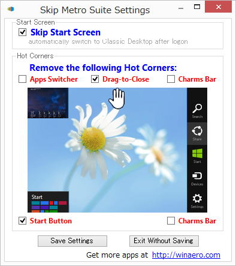

| TOP | weblog | TIPS | Works | リンク | 掲示板 |
| Windows8 備忘録 (1)Windows8は「買い」か？ (2)メトロ (3)遭遇した問題点 (4)６４bit版のCUBASEについて浅知恵 (1) lenovo ThinPad E520 をプリインストールのWindows7 Pro 32bit版を使用していました。 CPUは Intel Celeron B810 、購入時のメモリは２ＧＢでした。 購入価格 ￥２６,０００ に ３年延長保証つけて￥３１,０００です、やすっ！ プリインストールＯＳはWIndows7Pro 32bit版。 Windows8がAeroを止めてGUIをシンプルにしたりとか、カーネルやらいろいろチューニングして軽くなったとか記事にあったのでWindows8 Enterprize 64bitの９０日体験版をダウンロードして、メモリを４ＧＢを￥１,９８０(やすっ)で 追加して合計６ＧＢにして使ってみました。 体験癌を体験してみて明らかに早くなった気がするのでWindows8Pro アップグレード版をアマゾンで購入してみました。
Windows7 32bit版の時は「FREEMAKE」の動画変換とかは、相当遅かったし、動画編集とかは途中でかたまったり、使い物になりませんでした。 特に思い処理を行あった後のタスクスイッチがと別のアプリ起動がとてつもなく遅く相当イラついて使っていました。 Windows8ではタスクスイッチに時間がかかることは皆無で動作が非常にスムース。 まあ、これはWindows8のチューニングより６４bitOSとメモリ増設による恩恵でしょう。 今までのOSと明らかに違うのはインストールの短さと起動、シャットダウンが相当早くなったことです。
この様に電源ONから実質的にアプリが利用できるまでの時間はおおよそ１分です。 1分ではサービスは完全に起動しきっておらず多少重く感じますがブラウザなら問題ないレスポンスで動作します。 以下はlenovoのシャットダウンと電源オンからGoogle Chromeが起動するまでのビデオです。 全然関係ないけどNexsus7で撮影してGoogleドライブで取り込みました、USBで接続すりゃすむ話なのにね。 かつてない低価格でマイクロソフト製品としては、それなりに良さが実感できるのでメモリ増設っして６４bit版を選べるなら「買い」でしょう。 -戻る- (2) めだまの「Metoro」ですが、ほとんど使っていません。 従来からのディスクトップアプリを使うユーザーには全く不要のインターフェイスです。 主要な拡張子がメトロアプリ（？）に関連つけられていますが、ことごとくディスクトップのアプリに変更です。 Windows8の使いにくさの回避、便利にするたにインストールしたフリーソフトは以下の３つです。 Classic Shell Windows8には「スタートボタン」がありません。 プログラムの起動はメトロの「検索」かディスクトップに張り付けたショートカットになります。 「検索」はそれなりに優秀ですがやはりメンドクサイです。 このアプリを入れるとWindowsXP、７、カスタムのいずれかのデザインのメニューを選ぶことができます。 その他にもやたら沢山の設定があります。 Skip Metro Suite こいつはいたってシンプル、下のスクリーンショットだけの機能です。  -戻る- （3） 僕の場合はWindowsXP 32bit → Windows7Pro 64bit → Windows８Pro 64bit とOSをバージョンアップしたため、64bit OSで動作しないアプリはWindows7時代にふるい落とされました。 でも、動作しなかったアプリはほとんどなかったとはずで、あったとしても代替えのアプリがあるということです。 Windows8でも問題点はweblogで書いた「64bit Windows8専用ドライバじゃないとインストール出来ない仕掛け」です。 まともなメーカーでWindows8が発売される前で、比較的新しい周辺機器のデバイスドライバソフトウェアはWDF体躯ぷで書かれているものがありますが、Windows8のデジタル署名とか入ってなかったりで、インストールできません。 手持ちの周辺機器や購入予定の危機はできればメーカーのサポートに電話で確認したほうがよいでしょう。 ウェブの更新はどうしても遅れがちだし、たまに間違いがありますからね。 -戻る- （4） CUBASE7が発売されたそうで。 CUBASEはVer.5から64bit版がリリースされているようですね。 オーダーメードPCショップの社員？の「JUNSビルダー 山中潤のPC日記」でWindow Vista 64bitでCUBASE5 64bitを動かしてVST Pluginが動作するかテストをしています。 実験結果は「ほぼ問題なし」としています。 VSTがDLLで提供されていることも触れていて64bit版のCUBASEで動作確認するために重要な要素としてとらえているようですね。その点については技術的な事は書かれていませんけど。 解説しますとCPUのワードサイズが上がるとレジスタとかアドレッシングモードとかプラスアルファで新しい命令セットが追加されたりします。 ですのでコンパイラもそれに合わせたコンパイルをしなきゃいけません。 （余談ですが「一般的なDLL」は単体で起動できないだけで、EXEとほぼ同じと考えてください。） Microsoft主要ベンダーで発売しているコンパイラでは４biitのアプリ（がコンパイルされたexe）から３２bitぼDLLは直接呼べないんです。 MicrosofはOSのt移行を進めるため「WOW=Windows On Windows」と言うサブシステムを用意しています。 ３２OSで１６のアプリを動かすための「WOW」、６４のOSで３２のアプリを動かす「WOW６４」ですね。 記事ではSONARの64bitもテストしていてVSTの実装方法の違いを指摘しています。 面倒なので本文丸写しします、僕は反論あるけどね。
CUBASEの６４がどうやって３２のVSTをホストしているのか？、テクノロジは不明だが、オーバーヘッドとメモリ消費は当然開発するまえから分かりに分りきっている課題だから、その点はクリアしているだろうと思います。 本来ならこういった点を調査するなら、同じプラグインを使った同じ曲を録音、再生、トラックダウン（知らないのでテキトー）を実施してスレッド数の変動とか、とCPU使用率、メモリの変動を見ないとダメなんですね。 ということで、この記事の評価は鵜呑みにしないほうがよいような気がします。 ６４のCUBASEについてはこのページしか見ていないので、もう少し調査しないといけないなのですけど、いかんせん使った子tのないソフトウェアを想像で話しているので、正確性は自分でも疑問です。 話は変わりますがスタインバーグの「Cubase 7 / Cubase Artist 7 ― 既知の問題と、仕様についてのご注意事項」「Cubase 7 / Cubase Artist 7 のインストールに関する追加次項」にヘビー問題点が書いてあって素人から見ると「ベータ版じゃね？」って思うんですけど... 大昔はね、Windows3.1（知ってますか？）で動かしてたV１６bitアプリ(VB Ver2.0)から、VisualC++Ver4.2で書いた３２bitのDLLを呼び出すことが「正式に」できてたんです、「サンク」と呼ばれるものです。 実際に仕事でも使ったことがあって、データのメモリ上のソートがあまりにも遅いんで、そこだけ切り出して３２bitのDLL化しました。 難儀したなぁ。 -戻る- |